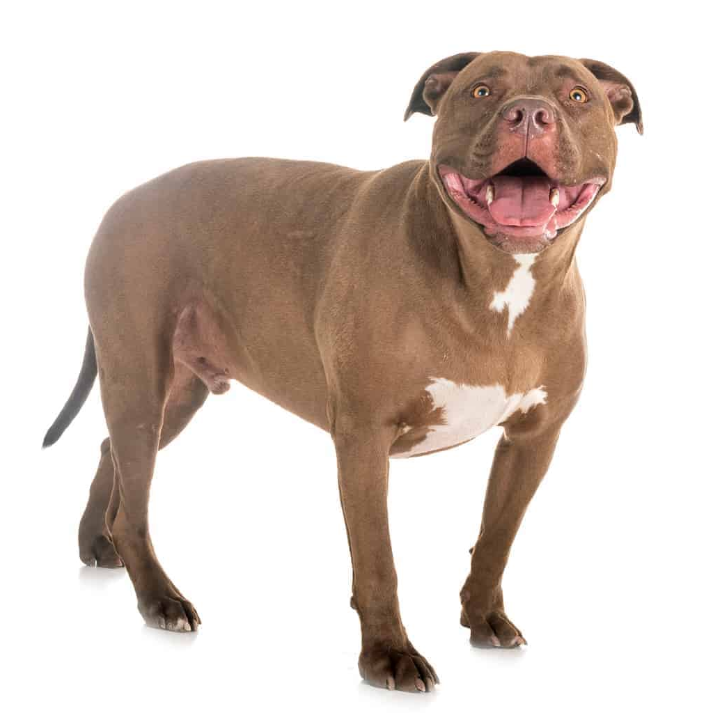

Pitbull
| Weight: |
20-25 kg |
| Color: |
Many colors |
| Coat: |
Short-haired |
Pitbull is a term used in the United States for a type of dog
descended from bulldogs and terriers, while in other countries such as
the United Kingdom the term is used as an abbreviation of the American
Pit Bull Terrier breed. The term was first used in 1927. Within the
United States the pit bull is usually considered a heterogeneous
grouping that includes the breeds American Pit Bull Terrier, American
Staffordshire Terrier, American Bully, Staffordshire Bull Terrier and
occasionally the American Bulldog, along with any crossbred dog that
shares certain physical characteristics with these breeds. In other
countries including Britain, the Staffordshire Bull Terrier is not
considered a pit bull. Most pitbull-type dogs descend from the British
Bull and terrier, a 19th-century dog-fighting type developed from
crosses between the Old English Bulldog and the Old English Terrier.